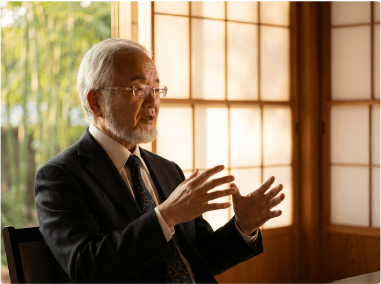
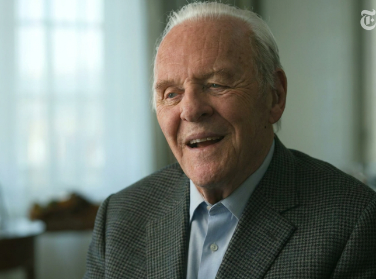

The $500,000 Alzheimer's Lie: Why Big Pharma Buried Dr. Ohsumi's Japanese Discovery for 30 Years — Until Clint Eastwood, 95, Used It to Reverse His Own Dementia
I have spent more than two decades covering aging stories for this magazine. Memory clinics. Dementia trials. The slow, quiet way Alzheimer's takes a person away from the people who love them. I thought I had seen every angle of this disease. I had not.
Nothing in my twenty years here prepared me for the conversation I had last month with Scott Eastwood.
"I was so angry," Scott told me, voice cracking on the other end of the line. "We watched my father fade away for years. We tried every doctor, every medication, every clinic: Aricept. Namenda. Exelon. Nothing held. And the whole time — the whole time — the answer was sitting in a kitchen cabinet on the other side of the world. They never told us. Nobody told us."
So if you are watching the small lapses start to add up — the names that don't come anymore, the keys you can't find, the look in your daughter's eyes when you ask the same question for the third time — I need you to read every line of this story carefully.
You are NOT alone. And it is NOT your fault.
After Scott's story went public, the man who reached out to AARP was not a doctor and was not a celebrity. It was Bill Gates.
Gates lost his own father to Alzheimer's in 2020. In the years since, he has quietly redirected more than $10 billion through the Gates Foundation toward a single project — finding what mainstream American medicine had missed.
What he found was a 100-year-old doctor most American physicians have never heard of: Dr. Yoshinori Ohsumi, trained at the University of Tokyo. Once a celebrated researcher in the United States. Then, in a single year, his name was scrubbed from journals. His grants frozen. His license to practice in this country revoked. Banned. Forced back to Japan, where he disappeared into a small village on the southern coast of Okinawa.
It took Bill Gates' team seven weeks to find him.
What Dr. Ohsumi confirmed to us on camera — what the 2025 Nobel Committee confirmed when it awarded him the Nobel Prize in Medicine just weeks later — is the reason the pharmaceutical industry buried his work for three decades.

AARP sent Maria Shriver — the NBC News special correspondent who lost her own father, Sargent Shriver, to Alzheimer's in 2011, and who has spent the last two decades as one of America's most outspoken voices on this disease — to Dr. Ohsumi's clinic in Okinawa. The full interview is published below. I am publishing it in full because — frankly — I do not know how much longer it will be allowed to stay online.
Maria Shriver: Dr. Ohsumi, for decades Americans have been told that Alzheimer's is genetics. It is aging. It is amyloid plaque. You say all of that is wrong. What is actually happening inside the brain?
Dr. Ohsumi: Amyloid plaque is not the cause. It is the scar. It is what is left behind after a piece of your brain has already been destroyed and the memory inside it is already gone. For thirty years the entire pharmaceutical industry has been chasing the scar instead of the wound. The real cause is a parasite. Its scientific name is Toxoplasma gondii. We call it the brain parasite. It enters through the food and water supply. Once inside the brain, it burrows directly into your neurons and feeds on them from within. Your brain slowly loses mass. We call this process Brain Rot. As the neurons are consumed, your acetylcholine — the chemical your brain uses to retrieve memory — collapses. First the small memories vanish. A name. Where you left your keys. The word you knew a second ago. Then the bigger ones. Faces. Conversations from yesterday. Entire chapters of your own life. That is Alzheimer's. That is dementia. It is not aging. It is consumption.
Maria Shriver: If the parasite has always been in the food supply, why did dementia explode only after 1970?
Dr. Ohsumi: Between 1970 and 1990, Alzheimer's and dementia cases in the United States rose approximately 600 percent. Genetics does not move that fast. Aging does not move that fast. What changed was the American immune system. Aggressive antibiotic prescribing. A 3,000 percent increase in pesticide load on American crops. Expanding immunization schedules. Layer upon layer, decade after decade, you discouraged your own immune system from acting independently. A healthy immune system identifies the brain parasite and eliminates it before it ever reaches the brain. By 1980, an entire generation of Americans no longer had that defense. The parasite finally had a clear path.
Maria Shriver: Help our readers picture what is actually happening inside the brain when memory starts to fail.
Dr. Ohsumi: Think of your brain as a vast library. Every book on every shelf is a neuron holding a memory. Your wife's face. Your wedding day. The names of your grandchildren. The street you grew up on. Acetylcholine is the librarian — she walks the aisles, pulls the right book, brings the memory back to you. The brain parasite is the infestation of insects eating through those books from the inside out. Silently. Page by page. Until there is nothing left inside the cover. As the books rot, the librarian has less and less to work with. First you forget where you left your keys. Then you forget a word mid-sentence. Then familiar faces start to blur. And finally the library falls completely silent. That is why the brains of dementia patients are visibly smaller at autopsy. They were not aging. They were being consumed.
Maria Shriver: And the drugs American families have been spending their savings on — Aricept, Namenda, Exelon, the new monoclonal antibodies?
Dr. Ohsumi: They do not kill the parasite. They do not repair the rotted neurons. They do not restore the librarian. They mask symptoms for a few months. That is the business model. A patient who is managed slowly is a patient who pays for a decade. A patient who is cured pays nothing. That is why my research was buried for thirty years. I was not banned because I was wrong. I was banned because I was right.
Maria Shriver: So you returned to Japan. To Okinawa. What did you find there?
Dr. Ohsumi: Okinawa is a Blue Zone. Nowhere else on Earth has a higher concentration of people over 100 years old with fully intact memory. People who can recite names, faces, and full stories from seventy years ago — with a clarity most Americans lose before they turn sixty. I tracked their diet for years. I documented what they ate, when they ate, and how they prepared it. I combined that data with the ancient Japanese healing tradition that the American medical establishment had taught me to forget. What I found, after years of work, was a 10-second morning ritual built from four natural compounds grown only on that island. Taken together at the right moment of the day, in the right order, they do something pharmaceutical science had called impossible. They kill the brain parasite. They regenerate the brain mass the parasite consumed. They restart natural acetylcholine production. And they protect the brain against future infection.
Maria Shriver: Bill Gates funded a full clinical trial of this ritual. What did the trial find?
Dr. Ohsumi: The trial was conducted in partnership with the Alzheimer's Association and the National Institute on Aging. 9,300 participants. Ages 35 to 85. Mild memory slips to advanced Alzheimer's. After twelve weeks the data was clear. The brain parasite was systematically eliminated from the participants' bodies. Brain tissue began to regenerate with an average recovery of 94 percent of lost cerebral mass. In 96 percent of participants, the progression of the disease was completely stopped. 93 percent regained cognitive function they had lost — driving again, paying their own bills, recognizing every grandchild by name. This was not management. This was not a treatment. It was a complete reversal of Alzheimer's disease in human subjects. The Nobel Committee saw the data. That is why they called me back to Stockholm in 2025.
What happened in the hours after that Nobel ceremony was something the press release never mentioned. During a media interview the following morning — cameras rolling, journalists in the front row — a man stood up in the back of the room. He was not a journalist. He was not a scientist.
"Do you have any idea how many billions in business your little ritual destroys if it is released?" he said. "I am only going to say this once, Doctor. Be very careful. You have no idea what you are messing with."
Bill Gates told us later that this was the moment he stopped waiting for the pharmaceutical industry to cooperate. He committed his own personal fortune to building, from scratch, the manufacturing infrastructure that would put Dr. Ohsumi's discovery directly into the hands of American families. No partners. No middlemen. No industry gatekeepers.
But the case that broke the entire story open for AARP readers was not a billionaire or a scientist. It was a 95-year-old American film legend who agreed to sit down with us on the condition that his story was told in his own words.
Clint Eastwood: "It started with small things. Misplaced keys. Appointments I swore I had never made. Then one afternoon I stopped in the middle of traffic with no idea where I was going. My doctor sat me down a week later and said the word out loud: dementia. He told me it was only going to get worse. I was 95 and for the first time in my life I felt completely powerless. My son Scott found Dr. Ohsumi's ritual. Two weeks later the fog lifted. The lapses stopped. The confusion cleared. I was driving again. I was on set again, making decisions, directing every detail. At 95, my mind is sharper than it was at 60. I got my freedom back. I got my independence back. I got my life back."
Scott Eastwood told AARP that the week his father read a full shooting script and recited the cast list without looking down at the page, he walked out of the room and cried. "I got my dad back," Scott said. "I never thought I would say that sentence again."
WATCH DR. OHSUMI EXPLAIN THE 4-INGREDIENT OKINAWA RITUAL — 5-MINUTE VIDEO
Other Hollywood Legends Who Reversed Their Memory Loss With Dr. Ohsumi's Okinawa Ritual

Anthony Hopkins, 86
"When I began studying the script for The Father, the lines simply would not stick. I was forgetting names, conversations, basic things. My doctors offered medications. None of them touched what was really happening. I was terrified — not of losing the role, but of losing myself. Then I found Dr. Ohsumi's ritual. Within weeks the fog lifted. I memorized every line, every silence in that script. I delivered the performance of my career with a mind I was no longer sure I had. Today, at 86, my mind is sharper than it has any right to be."
Morgan Freeman, 87
"I was turning down roles because the fog was constant. I did not trust my own mind anymore. I would read a page and have no memory of it ten minutes later. The thought of standing on a set and forgetting my lines in front of a crew of two hundred people terrified me. Within weeks of starting Dr. Ohsumi's ritual, everything changed. The names came back. The lines stuck. I called my agent the very next day. This simple ritual practically saved my career — and far more importantly than that, it gave me back the man my grandchildren recognize."
Robert De Niro, 80
"There was a point where I was seriously considering stepping away from acting. The memory lapses were becoming impossible to hide on set. I would look at my daughter and feel that small panic — the moment her name took a second too long to come back. That was the moment I knew I had to do something. Dr. Ohsumi's ritual gave me my confidence back. I am 80 years old and I have no intention of stopping. My mind is mine again."
Attention: The longer you wait, the more your brain rots.
According to the clinical data Dr. Ohsumi presented to the Nobel Committee, every additional week of delay can reduce your chances of full memory recovery by up to 8 percent. The brain parasite continues to feed even now — at this exact moment, as you are reading this — and each neuron it consumes is one less memory your mind will be able to recover.
Bill Gates has also confirmed to AARP that pharmaceutical industry attorneys have begun filing formal complaints to have this interview removed from the AARP archive within the coming weeks. We do not know how much longer this video will be allowed to remain online.
Watch the full 5-minute video below. In it, Dr. Ohsumi shows the exact 4 Okinawa ingredients, the precise order in which they must be combined, the 10-second morning protocol, and the single mistake most people make that destroys the result before it can even begin.
Before we close this story, I want to leave you with the request Bill Gates asked AARP to pass on to every reader: "Please share this with the families you love. Every father, every mother, every grandparent who is still living with this disease without knowing there is now a way back. We have the power to make sure no American family has to watch what mine had to watch ever again."